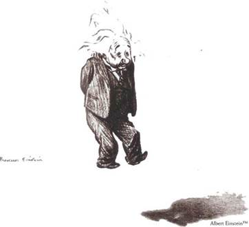

Thái độ của ông đối với lẽ sinh tử y như thái độ của các triết gia thời cổ.
Ngay từ 1916, một lần ông đau nặng, tưởng không qua khỏi, ông đã bảo một bà bạn:
- Tôi tự coi tôi là một phần tử của tất cả những gì sống trong vũ trụ; sinh và tử chỉ như thuỷ trào lên xuống nên tôi không quan tâm tới khởi thuỷ và chung cục của mỗi đời sống.

Giáo sư Einstein, tranh của Low
Một Lão tử của thế kỷ 20 đi tìm cái “Đạo” của vũ trụ[37]
Lần khác ông nói với môn sinh của ông là Infeld:
- Đời sống là một cảnh tượng say mê. Tôi thích nó. Nó tuyệt diệu. Nhưng nếu tôi biết trước rằng ba giờ nữa tôi chết thì tôi cũng tuyệt nhiên không xúc động. Tôi sẽ nghĩ cách dùng ba giờ cuối cùng đó ra sao cho có ích nhất, tôi sẽ bình tĩnh, sắp đặt các giấy má của tôi, rồi tôi bình tâm nằm xuống.
Các khoa học gia chân chính sao mà gần gũi các triết gia thế. Khi suy tư mấy chục năm về thiên nhiên thì dù theo con dường nào, rốt cuộc người ta cũng đồng hoá với vũ trụ.
Ngày 13 tháng 4 năm 1955, ông đau nhói dữ dội ở đại động mạch quản (aorte)[38]. Các y sĩ đòi mổ, ông không chịu. Một giờ rưỡi sáng ngày 18-4 ông nghẹt thở, thì thào mấy lời bằng tiếng Đức mà cô y ta không hiểu. Rồi ông tắt nghĩ.
Theo di chúc, không có một lễ long trọng nào của chính quyền, cũng không làm lễ tôn giáo. Di hài ông được hoả thiêu, chỉ có vài người cực thân tới dự, vì giờ và chỗ thiêu được hoàn toàn giữ kín[39]. Vốn là tro bụi, Einstein lại sớm trở về với tro bụi. Trước ông chưa có đám táng một vĩ nhân nào mà giản dị, khiêm tốn tới mực đó, mà sau ông cũng chỉ thấy có đám táng của Bertrand Russell[40]. Cả khi chết rồi, ông cũng còn cho nhân loại một bài học nữa.
Toàn thế giới xúc động. Báo nào cũng loan tin. Điếu văn rất nhiều, nhưng tôi không chép lại vì trước cái chết của những người như Gandhi, Einstein, tôi thấy lời điếu nào cũng là vô nghĩa hết.
Sài Gòn ngày 1-10-1970
(In theo bản NXB Lửa Thiêng, 1972 Sài Gòn)
[37] Lời chú thích trong Sđd, trang 268. (Goldfish).
[38] Tức động mạch chủ. Xem thêm bài Cái chết của nhà vật lý vĩ đại A.Einstein của Bùi Hữu Cường trên trang http://antg.cand.com.vn/vi-VN/hosomat/2010/6/72521.cand. (Goldfish).
[39] Trước đó, có lần ông bảo: “Tang lễ tự nó, chẳng nghĩa gì cả (…) Chăm lo tang lễ chẳng khác gì lo việc đánh giày, chỉ để cho không ai có thể chê mình rằng đi giày dơ”.
[40] Coi cuốn Thế giới ngày nay và tương lai nhân loại của Bertrand Russell – Văn hoá xuất bản 1997, và cuốn Bertrand Russell chiến sĩ tự do và hoà bình (nt)
Đám tang của Mozart, nhạc sĩ mà Einstein thích nhất cũng chỉ có một số rất ít người đi đưa, nhưng hoàn toàn khác hẳn: tình đời bạc bẽo, bao nhiêu người trước kia ngưỡng mộ Mozart lúc đó quên Mozart và ngay mấy người đi đưa đám, giữa đường gặp bão tố, cũng bỏ về hết, chỉ còn trơ hai người phu khiêng quan tài tới huyệt.